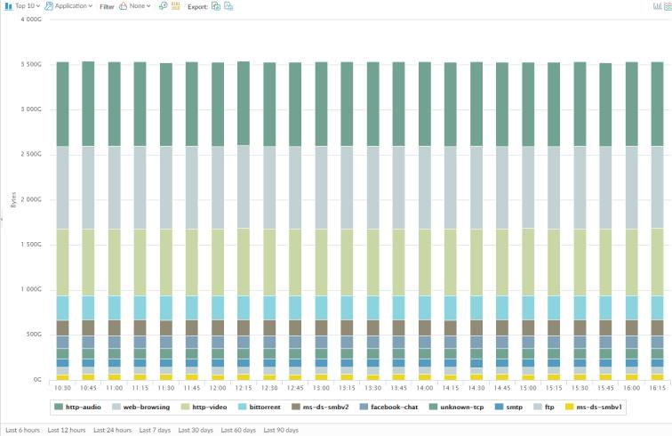

App Scope Network Monitor Report The Network Monitor report displays the bandwidth dedicated to different network functions over the specified period of time. Each network function is color-coded as indicated in the legend below the chart. For example, the image below shows application bandwidth for the past 7 days based on session information. App Scope Network Monitor Report  The report contains the following options. Network Monitor Report Options Description Top Bar Top 10 Determines the number of records with the highest measurement included in the chart. Application Determines the type of item reported: Application, Application Category, Source, or Destination. Filter Applies a filter to display only the selected item. None displays all entries. Count Sessions and Count Bytes Determines whether to display session or byte information. Determines whether the information is presented in a stacked column chart or a stacked area chart. Export Exports the graph as a .png image or as a PDF. Bottom Bar Indicates the period over which the change measurements are taken. Parent topic Monitor > App Scope
